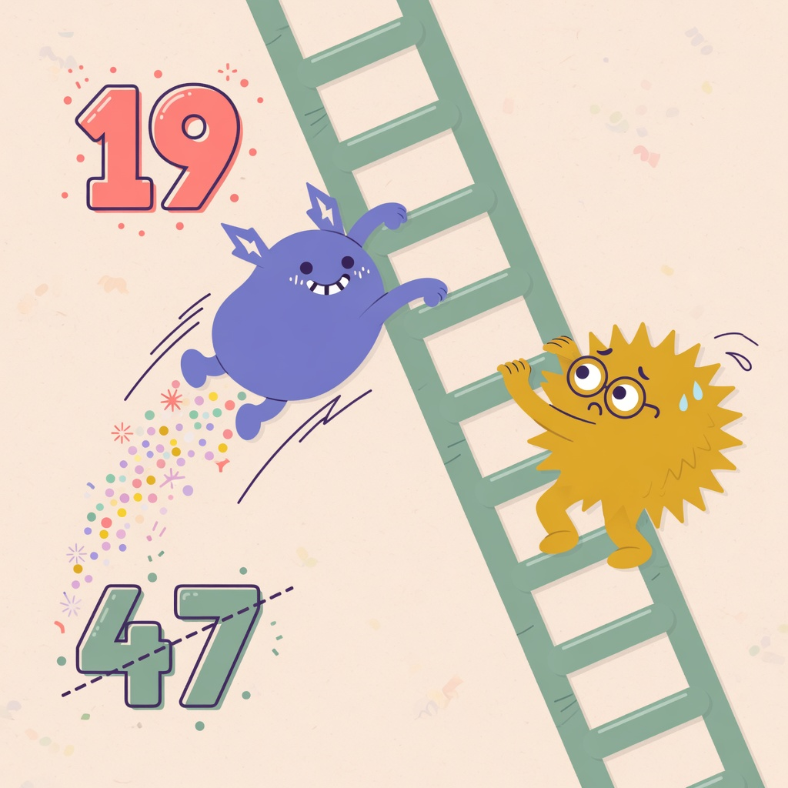
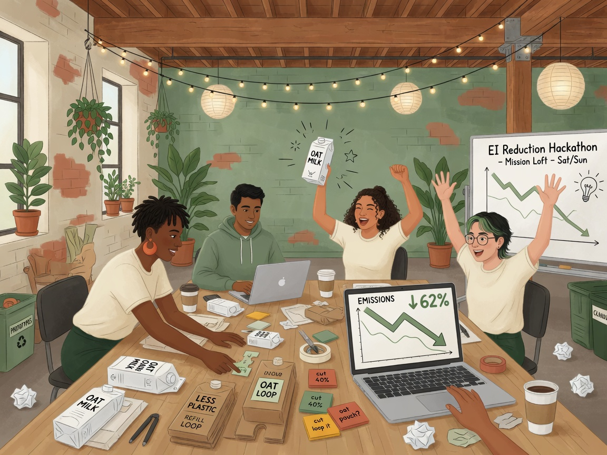

In 2028 San Francisco, Startups Are Now Competing on the Climatico Leaderboard — and It’s Getting Personal


In San Francisco’s startup scene, two dashboards now sit side by side on most founders’ screens. One tracks revenue and growth. The other? Their company’s rank on the Climatico Leaderboard.
What started as a quiet tool for measuring environmental impact has turned into something closer to a public scoreboard. Startups are openly competing on Environmental Impact (EI) intensity — emissions per dollar of revenue — and many are treating their position on the leaderboard with the same seriousness as their monthly recurring revenue.
“Last month we jumped from 47th to 19th after switching one of our cloud regions and renegotiating with two suppliers,” said Lila Chen, co-founder of Looply, a Series A logistics startup. “It got a little competitive.”
The leaderboard, powered by Climatico, now ranks hundreds of Bay Area startups. Many teams have integrated AI agents that automatically update their EI data, turning what used to be a dreaded monthly reporting task into something closer to background infrastructure.
Investors and Customers Are Checking Daily
The public nature of the rankings has changed external dynamics too. Several venture firms now regularly review the leaderboard during sourcing and due diligence. Some enterprise customers have also started referencing it during procurement conversations.
“We used to get vague sustainability slides in pitch decks,” said Marcus Hale, a partner at a climate-focused fund. “Now I can just open the leaderboard and see how a company is actually trending. It saves everyone a lot of time — and it’s surprisingly addictive to watch the rankings move.”
Marcus Hale · Climate-focused fund
Hackathons Turn EI Reduction Into a Sport
Perhaps the most visible sign of this shift is the rise of EI Reduction Hackathons — weekend events where startup teams compete to lower their environmental impact without damaging revenue.
At one recent hackathon in the Mission District, a team from a food-tech startup discovered that simply changing the default packaging option for one product line could cut their EI intensity by 11% with almost no effect on margins. The moment was captured on video and quickly went viral in local founder group chats.
“We treated it like a game,” said Jamal Reyes, who participated in the event. “Our AI agent kept suggesting weird little optimizations — like changing our email service provider. We didn’t expect it to matter, but it actually moved the needle. We ended up winning second place and a case of fancy oat milk.”
Jamal Reyes · EI Reduction Hackathon
Another team reportedly spent most of the weekend arguing over whether switching their office coffee brand counted as a legitimate optimization. (It did — barely.)
A New Kind of Startup Rivalry
The combination of public rankings, AI-assisted tracking, and regular hackathons has created a noticeably different atmosphere among early-stage companies in San Francisco. While growth remains the main priority, environmental performance has become a visible second axis of competition — and sometimes friendly trash talk.
“I check the leaderboard more often than I check our competitor’s website now,” admitted Sofia Patel, co-founder of a climate-focused SaaS startup currently sitting in the top 15. “There’s one company right above us that we’re constantly trying to beat. We’ve never met them, but we definitely have strong opinions about their packaging choices.”
Sofia Patel · Top-15 SaaS
Not everyone is thrilled about the growing transparency. Some founders have expressed concern that early-stage companies with inherently higher-impact models could be unfairly judged. Others worry about the pressure of constant visibility.
Still, for many in the ecosystem, the leaderboard has made environmental performance feel more immediate, comparable, and — unexpectedly — a little fun.
“It used to feel like this heavy, abstract thing you were supposed to care about,” said Chen of Looply. “Now it’s just part of the game. And honestly? The game is more interesting when there are real numbers on the board.”
Lila Chen · Looply
Whether this new form of competition will drive meaningful environmental improvements at scale is still unclear. But in San Francisco right now, it has already changed how many founders measure success — and how they talk about it over coffee (oat milk or otherwise).